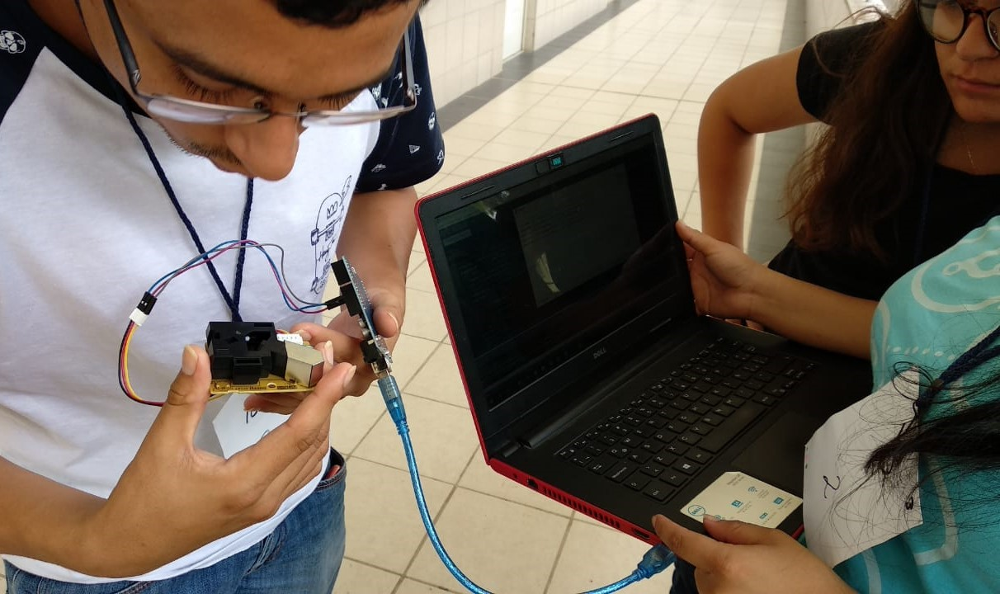
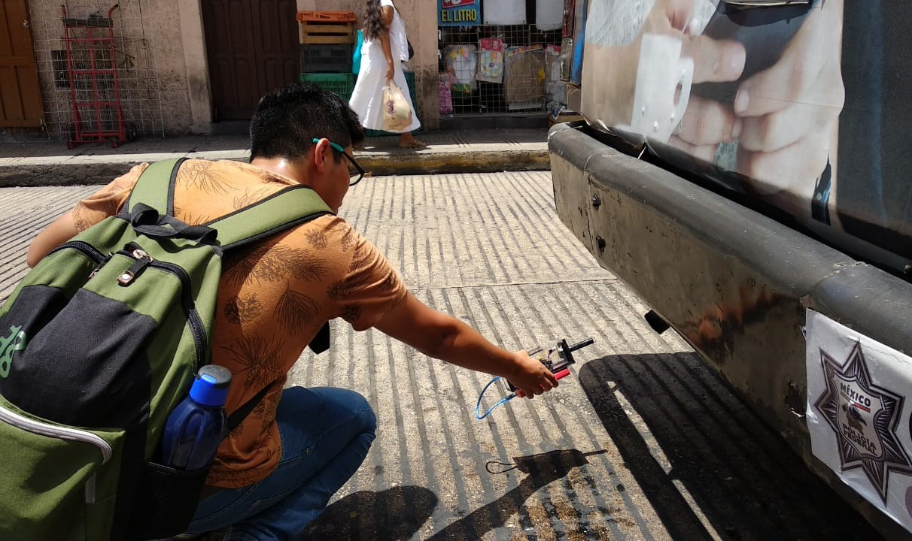
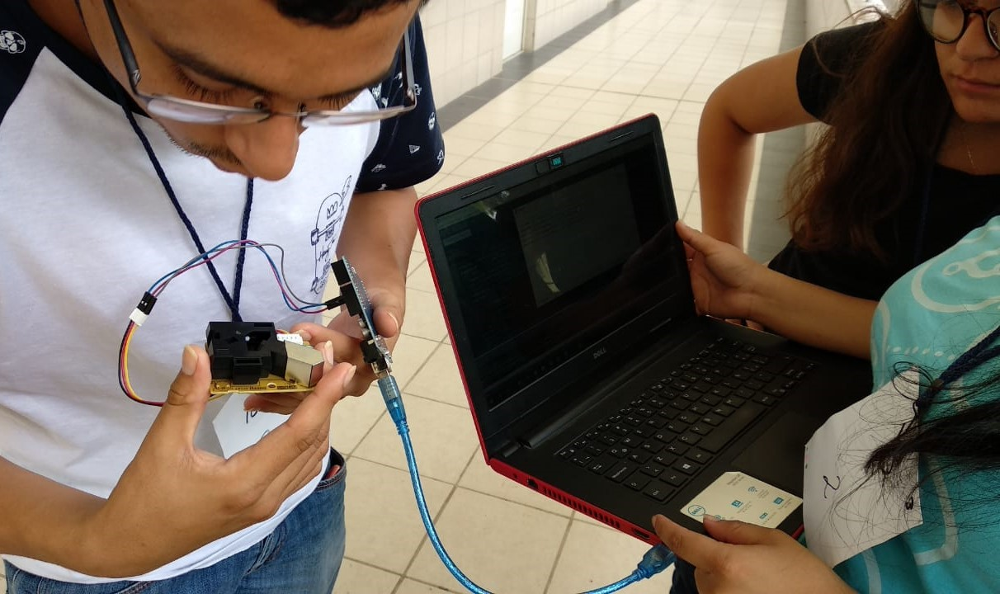
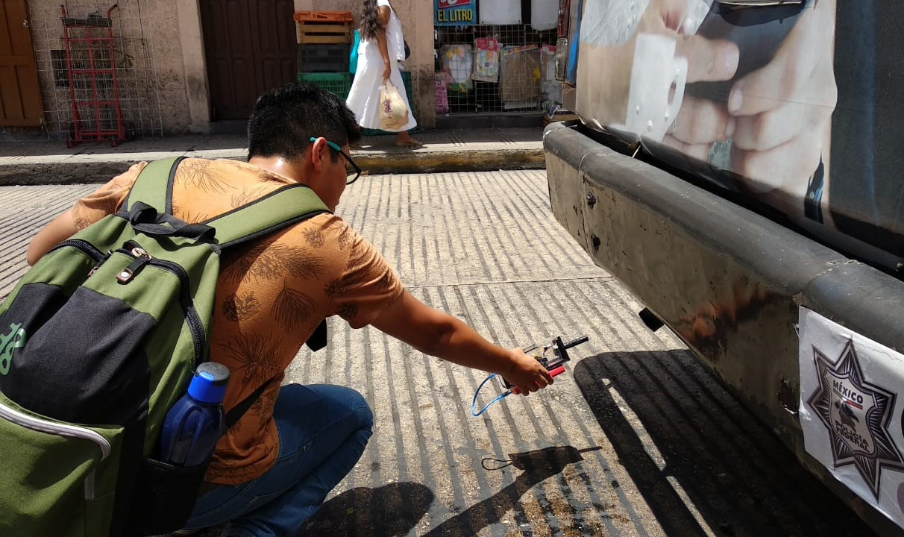
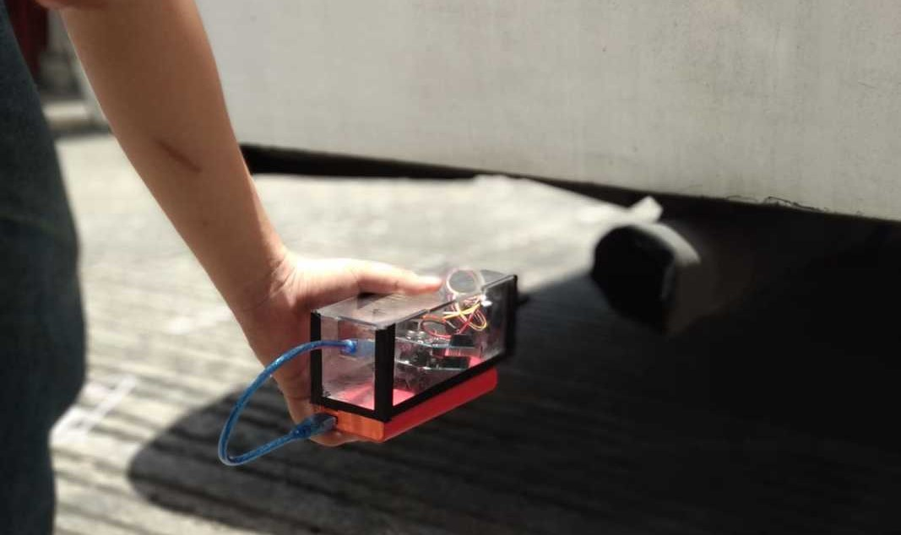
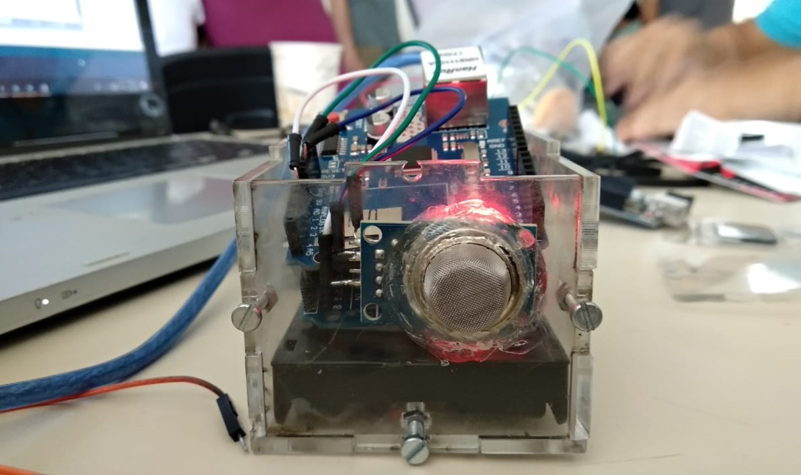
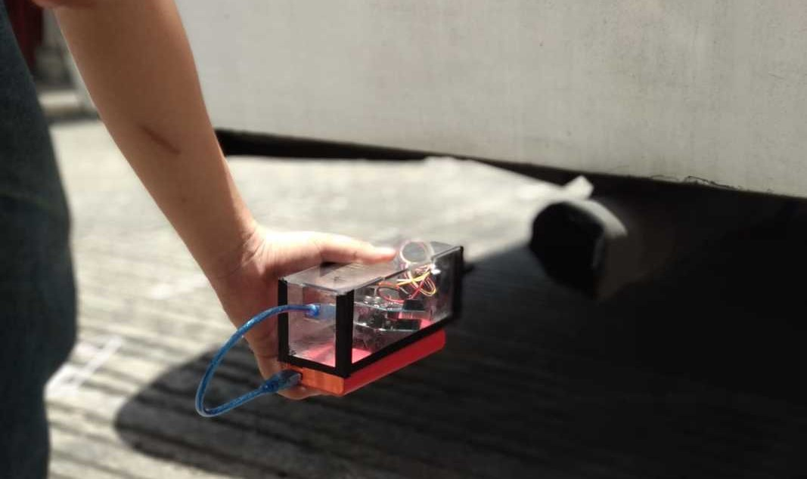
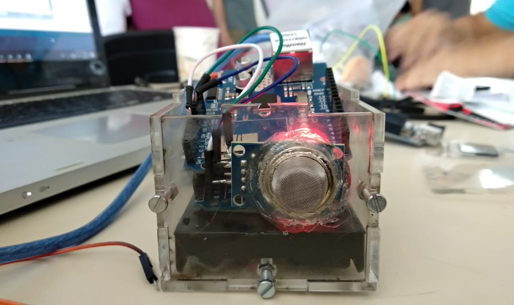

Clubes de Ciencia


 



 





Clubes de Ciencia México (CdeCMx) is a non-profit organization that seeks to encourage Mexican students to pursue professional careers in STEM. I volunteer in the summers as an instructor with CdeCMx to teach high school and college students in Mérida how to design, prototype, and deploy custom devices to monitor public health in a city. I partner with a local co-instructor, Rodrigo Gamboa Torres, to construct a curriculum for and teach a week-long class titled "Citizen Science: Monitoring Public Health in Your City."
Students drew on personal experience to select public health problems facing their city. Upon rigorously defining the issues about which they were passionate, they divided into teams to design, code, and prototype devices to collect public health data. In one week, students developed working prototypes to measure carbon pollution and particulate matter in the city center, record loud noise levels late at night, and investigate methane leaks near septic tanks. But they didn't stop there. Each team also created a scientific presentation which they delivered to local citizens in a town hall event at the end of the week illustrating their data and its practical implications, as well as propose researched policy solutions.
Our students performed phenomenal work and several of them have continued their projects with hopes of collecting more data and presenting at a national science fair. As scientists, we wield powerful tools to which most people do not have access. It is therefore our responsibility to use those tools to benefit our communities.
Learn more about Clubes de Ciencia México and my co-instructor, Rodrigo Gamboa Torres, on their websites.